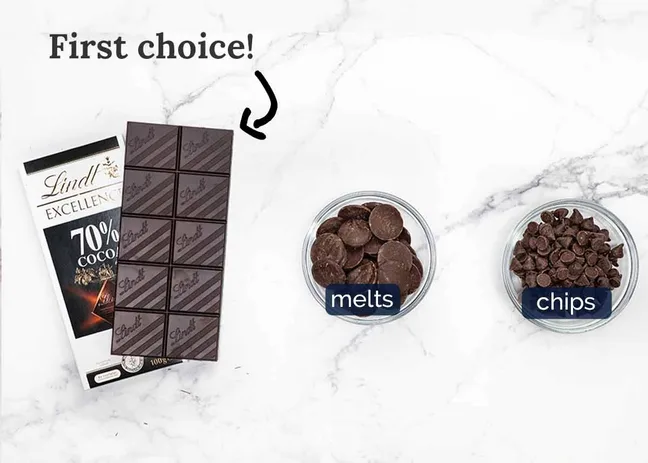
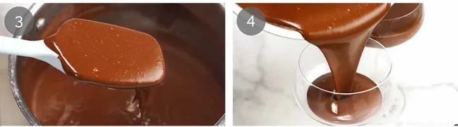
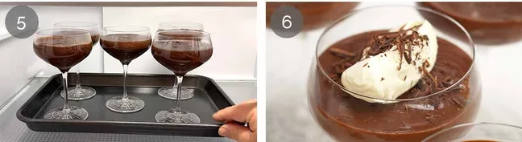

These little Chocolate Pudding Pots are everything I love in a dessert - luxurious yet not overly rich, not too sweet, and elegant enough for a fancy dinner, yet dead easy to make. It's the sort of dessert that makes people think you've done something clever, when really it's just a matter of whisking a few things together then chilling.

Chocolate pudding tastes smooth, creamy, and rich. It has a deep chocolate flavour that is sweet but not overwhelming, with a soft, silky texture that melts in your mouth. The taste is comforting and indulgent, similar to melted chocolate or chocolate custard, making it a classic and satisfying dessert.

70% cocoa chocolate (bittersweet chocolate) will give this a rich chocolate flavour that's not too sweet, as well as the dark brown chocolate colour that makes this look quite sophisticated, I think! I like to use the block form and chop it up so it melts effortlessly. The chocolate also does the bulk of the heavy lifting to set the pudding, so don't cut down on the chocolate. Also see FAQ below for using other types of chocolate as you will need to use more cornflour / cornstarch to set the pudding.
Regular unsweetened cocoa powder gives the pudding its chocolate flavour and should be sifted to remove lumps. Egg yolks add richness and help thicken the pudding, while milk and cream provide a smooth, creamy base. Cornflour helps the pudding set properly, sugar sweetens and balances the bitterness of cocoa, vanilla adds warmth and depth, and a pinch of salt enhances the overall chocolate flavour.

Whisk everything - Put the yolks and sugar in a medium saucepan (about 20cm / 8″ wide). Whisk to combine (it will seem thick at first but then the sugar liquifies). Add the cornflour, vanilla, cocoa powder (I sift it straight in) and salt with a small splash of milk (~2 tablespoons). We need a bit of milk else the mixture is dry and clumpy. Then mix the milk and cream in - it should be a pale brown watery mixture.
Warm to thicken - Put it on a medium stove. As the mixture warms up, it will thicken slightly - not much, because the pudding is mostly set from the chocolate which we add later. Whisk every now and then at first, then more regularly as it gets warmer as it will thicken on the base.Once you see bubles take it off after 15seconds.
Melt chocolate - Add the chopped chocolate and stir until fully melted. If it's not melting fully (which could happen if some chunks were a little big!), put it back on a low stove to give it a helping hand.
our - Working quickly, pour the mixture into 5 glasses or other serving vessel. For 5 servings there is just shy of 1/2 cup per person, so uses glasses a little larger than this (my cocktail glasses are 3/4 cup (180 ml). You could also use one large dish - there's 1.25 litres (5 cups) of custard so use a dish a little larger.
Chill to set - Let the puddings cool for around 15 minutes on the counter then in chill in the fridge for 3 hours to fully set. Don't cover as it will cause condensation which will drip onto the surface of the pudding. The pudding will set to a texture that is soft enough so it melts effortlessly into a river of chocolate in your mouth, but holds its form when you take a scoop out.
Decorate with a little (or a lot!) of whipped cream and a sprinkle of chopped chocolate.